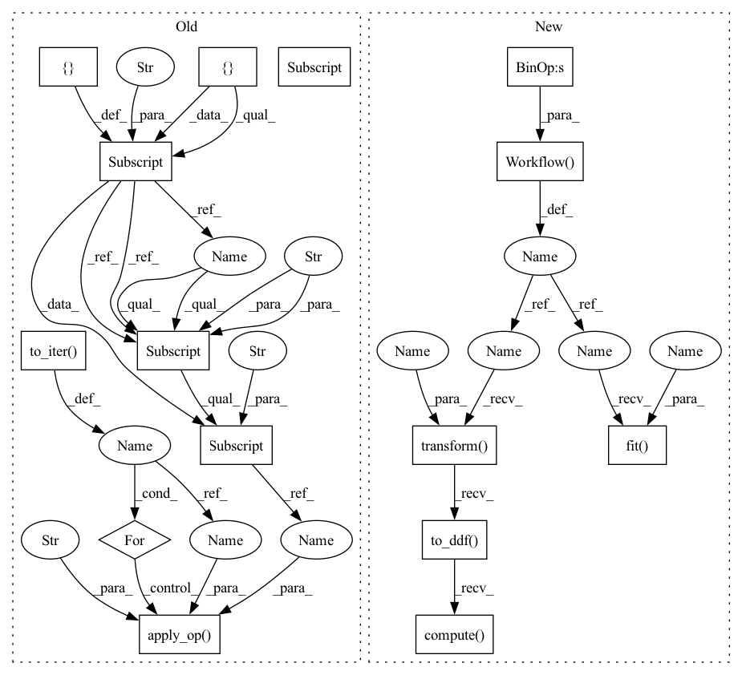

Pattern ID :33157

Before Change
else:
bucketize_op = ops.Bucketize(boundaries, cont_names)
columns_ctx = {}
columns_ctx["continuous"] = {}
columns_ctx["continuous"]["base"] = list(cont_names)
for gdf in dataset.to_iter():
new_gdf = bucketize_op.apply_op(gdf, columns_ctx, "continuous")
for col, bs in zip(cont_names, boundaries):
assert np.all(new_gdf[col].values >= 0)
assert np.all(new_gdf[col].values <= len(bs))
// TODO: add checks for correctness here that don"t just
After Change
bucketize_op = ops.Bucketize({name: boundary for name, boundary in zip(cont_names, boundaries)})
bucket_features = cont_names >> bucketize_op
processor = nvtabular.Workflow(bucket_features)
processor.fit(dataset)
new_gdf = processor.transform(dataset).to_ddf().compute()
for col, bs in zip(cont_names, boundaries):
assert np.all(new_gdf[col].values >= 0)
assert np.all(new_gdf[col].values <= len(bs))
In pattern: SUPERPATTERN
Frequency: 3
Non-data size: 15
Instances
Fragment ID: 95836838
Project Name: nvidia/nvtabular
Commit Name: 4c92dffac4354d816178264bcfcdec722db2ec1c
Time: 2021-01-05
Author: github@benfrederickson.com
File Name: tests/unit/test_ops.py
M Class Name: AnonimousClass
N Class Name: AnonimousClass
M Method Name: test_bucketized(5)
N Method Name: test_bucketized(6)
M Parent Class:
N Parent Class:
M File Name: tests/unit/test_ops.py
N File Name: tests/unit/test_ops.py
M Start Line: 1089
M End Line: 1107
N Start Line: 680
N End Line: 692
'>
Before Change
else:
hashed_cross_op = ops.HashedCross([cat_names], [num_buckets])
columns_ctx = {}
columns_ctx["categorical"] = {}
columns_ctx["categorical"]["base"] = list(cat_names)
// check sums for determinancy
checksums = []
for gdf in dataset.to_iter():
new_gdf = hashed_cross_op.apply_op(gdf, columns_ctx, "categorical")
new_column_name = "_X_".join(cat_names)
assert np.all(new_gdf[new_column_name].values >= 0)
assert np.all(new_gdf[new_column_name].values <= 9)
checksums.append(new_gdf[new_column_name].sum())
for checksum, gdf in zip(checksums, dataset.to_iter()):
new_gdf = hashed_cross_op.apply_op(gdf, columns_ctx, "categorical")
assert new_gdf[new_column_name].sum() == checksum
@pytest.mark.parametrize("gpu_memory_frac", [0.01, 0.1])
After Change
cat_names = [["name-string", "id"]]
num_buckets = 10
hashed_cross = cat_names >> ops.HashedCross(num_buckets)
dataset = nvt.Dataset(df)
processor = nvtabular.Workflow(hashed_cross)
processor.fit(dataset)
new_gdf = processor.transform(dataset).to_ddf().compute()
// check sums for determinancy
new_column_name = "_X_".join(cat_names[0])
assert np.all(new_gdf[new_column_name].values >= 0)
'>
Fragment ID: 95836836
Project Name: nvidia/nvtabular
Commit Name: 4c92dffac4354d816178264bcfcdec722db2ec1c
Time: 2021-01-05
Author: github@benfrederickson.com
File Name: tests/unit/test_ops.py
M Class Name: AnonimousClass
N Class Name: AnonimousClass
M Method Name: test_hashed_cross(5)
N Method Name: test_hashed_cross(6)
M Parent Class:
N Parent Class:
M File Name: tests/unit/test_ops.py
N File Name: tests/unit/test_ops.py
M Start Line: 1058
M End Line: 1085
N Start Line: 659
N End Line: 674
'>
Before Change
drop_duplicates_ext=drop_duplicates,
)
columns = mycols_pq if engine == "parquet" else mycols_csv
columns_ctx = {}
columns_ctx["all"] = {}
columns_ctx["all"]["base"] = columns
// Iterate, apply op, and check result
for gdf in dataset.to_iter():
new_gdf = merge_op.apply_op(gdf, columns_ctx, "all")
check_gdf = gdf.merge(df_ext_check, how=how, on=on)
assert len(check_gdf) == len(new_gdf)
assert (new_gdf["id"] + shift).all() == new_gdf["new_col"].all()
assert gdf["id"].all() == new_gdf["id"].all()
After Change
df_ext_check = df_ext_check[columns_ext]
if drop_duplicates:
df_ext_check.drop_duplicates(ignore_index=True, inplace=True)
joined = nvt.ColumnGroup(columns_left) >> nvt.ops.JoinExternal(
df_ext,
on,
how=how,
columns_ext=columns_ext,
cache=cache,
drop_duplicates_ext=drop_duplicates,
)
gdf = df.reset_index()
dataset = nvt.Dataset(gdf)
processor = nvt.Workflow(joined)
processor.fit(dataset)
new_gdf = processor.transform(dataset).to_ddf().compute().reset_index()
check_gdf = gdf.merge(df_ext_check, how=how, on=on)
assert len(check_gdf) == len(new_gdf)
'>
Fragment ID: 95836832
Project Name: nvidia/nvtabular
Commit Name: 4c92dffac4354d816178264bcfcdec722db2ec1c
Time: 2021-01-05
Author: github@benfrederickson.com
File Name: tests/unit/test_ops.py
M Class Name: AnonimousClass
N Class Name: AnonimousClass
M Method Name: test_join_external(8)
N Method Name: test_join_external(8)
M Parent Class:
N Parent Class:
M File Name: tests/unit/test_ops.py
N File Name: tests/unit/test_ops.py
M Start Line: 944
M End Line: 988
N Start Line: 548
N End Line: 590